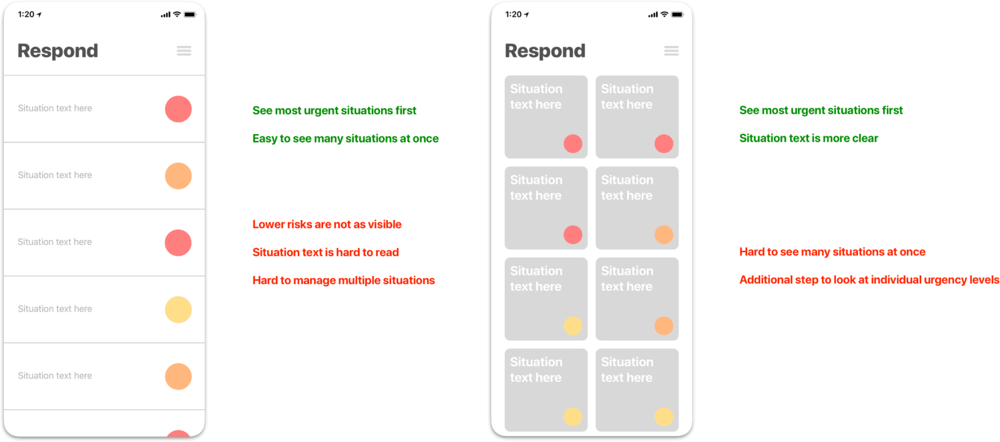
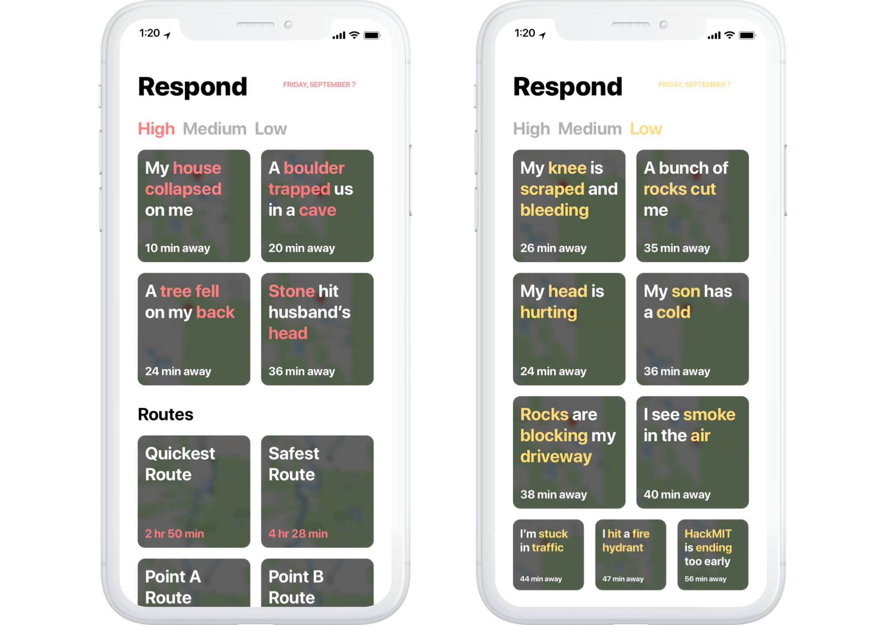
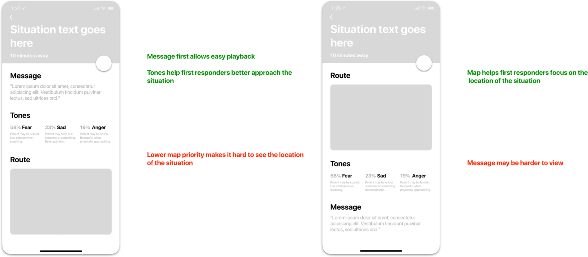
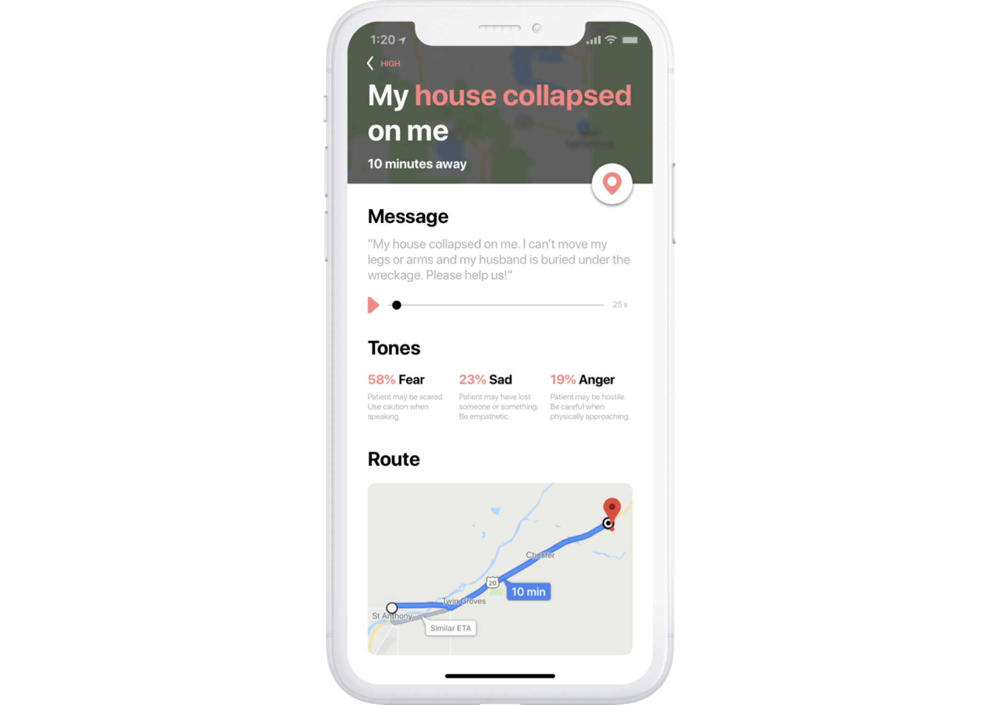
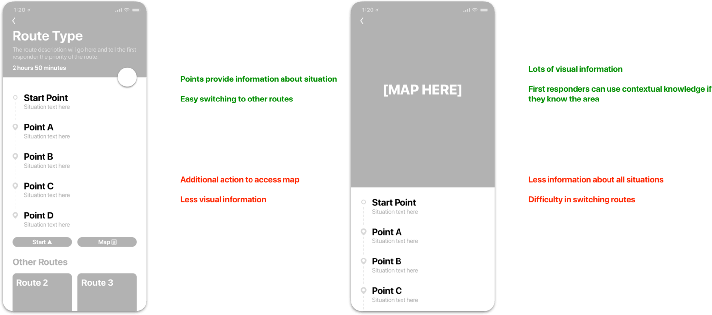
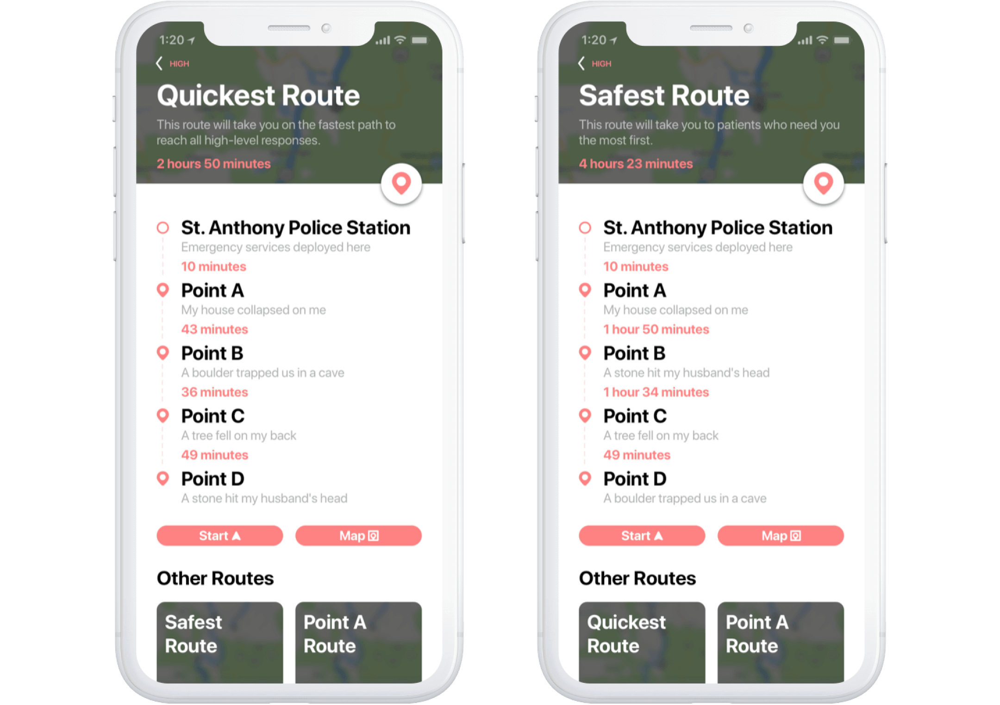

An app that enables first responders to reach those who need help faster and safer after natural disasters. Inspired by those who tended to the victims of Hurrican Florence.
User Interface Designer
User Experience Designer
September 2018
Natural disasters are a city’s worst nightmare. Fortunately, we have first responders who are trained and prepared to risk their lives to save others in these difficult situations. However, it’s difficult to collect and analyze data for all the people who need help, from severity of injury to duration of travel to the site of the victim. One of our team members from Duke University had flown out early to MIT as a result of Hurricane Florence. We recognized an issue that was very real and had promise for innovation.
When looking at current methods used by first responders, we noticed there was a lack of proactive searching. While first responders can easily find concentrated urban area, underpopulated rural areas are often underserviced. The current processes relied on crowdsourced information and tips followed up by search-and-rescue missions. First responders want to help as many people as possible, but they sometimes don’t know the location and severity of victims’ injuries.
While we didn’t have access to drones, we believed that using drones to search and relay information would be a good option to quickly find people who needed help. Drones would be able to provide:
Our idea was to create a versatile mobile app that would aggregate data from these drones and use machine learning to prioritize situations by urgency levels high, medium, or low. We tried various explorations that each presented the information in a different way; our objective was to allow a user to quickly take away vital information without overloading the screen with details.
We compromised some of the ease of usability and scrolling for a more detailed view in the end. After all, first responders wouldn’t be scrolling through a feed like Facebook or Twitter, but rather accessing a few, isolated situations and details from within these situations.
Using IBM Watson’s speech-to-text and tone analyzer APIs, we were able to teach a neural network emergency vocabulary and successfully assign priority levels to situations. First responders could also listen to the survivors’ messages themselves to identify age, level of panic, shock, etc.
While speech-to-text technology has certainly made strides, some aspects of voice can convey severity of damage, age, and other factors that a first responder might want to know. Considering most messages would be 30 seconds to 1 minute in length, we believed that the ability to playback the original audio message was an important piece of this screen.
The second piece of the application would allow first responders to select certain situations and automatically generate routes based on the drone information. Automatically generated routes would also suggest the fastest route, reaching all situations as quickly as possible, or the safest route, reaching the highest danger situations first.
The first route system allows a bit of subjectivity by allowing first responders to choose different types of routes and make judgements in unique circumstances. First responders are not meant to take servance under the machine of the app; rather, the technologies of the app should leverage current first responder natural disaster protocols to ease issues that slow down the process of saving lives.
Within the hackathon environment, we weren’t able to test the application’s use in with real first responders. Furthermore, testing this app in a real situation would be highly unlikely. However, our application was able to separate out different situations and showcase those that needed the most urgent care for the user. The app was recognized by Microsoft’s Azure team and IBM’s Call for Code competition for creating unique solutions to natural disasters.